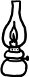

İdare lambaları vardı eskiden; kendi ışığının gölgelerinden ürken, ürktükçe cismine eziyet eden idare lambaları. Daha fazla ürkmesinler diye parlamaktan, harlamaktan, ışıltıdan, biz de hep idareli yakardık onları. Sanırım hâlâ varlar yakınlarda bir yerlerde... Ben kelimelere takılırdım, kelimeler aklımın kancalarına. Kafamı kurcalardı, elimde değil. Okuduğum ilkokulda, bir ayıbı saklarcasına üstündeki cama kadar tepeden tırnağa grilere boyanmış kapılar üzerinde, çerçeveli levhalar içinde, fiyakalı harflerle yazardı koca koca: İDARECİ. O kapılar ardında, "okulun idarecisi" sıfatıyla birtakım adamlar otururdu; hepsi de bir örnek giyinip bir örnek somurtan. Dikdörtgen ve küçük, siyah ve düz çantaları vardı bileklerine asılı taşıdıkları. Bunlar mühim adamlardı. Bir müesseseyi idare etmenin olanca inceliklerine vâkıf olmanın ayrıcalığıyla mühürlenmiş insanlar... Bütçede açık, disiplinde gedik, müfredatta aksama olma ihtimali belirmeye görsün, derhal onlar el atardı işe. Çekip çevirir, bulup buluşturur, kitabına uydururlardı; kavgalı öğretmenler arasında hassas bir denge tutturur, bir yandan otoritelere yaranıp bir yandan da velileri bağlamayı başarır ve yapacakları her işi, atacakları her adımı muhakkak uzun vadeli planlarlardı. Zaman, tıpkı ellerinin altındaki dar bütçeler gibi, ince ince hesaplanıp tartılması, idareli idareli kullanılması gereken bir şeydi onlara göre.
Kelimeler aklımın kancalarına takılırdı, kancalar da hayatımın akışına. Hissederdim bazı bazı, zeminden bir yerden, derinden, temelden farklılıklar vardı yaşıtım kız çocuklarıyla aramda. Onların bildiği esaslı bir şeyi, ben bilmiyordum mesela. Bende bir eksiklik olduğunun farkındaydım farkında olmasına da, ne o eksikliğin nasıl bir şey olduğuna, ne de nereden kaynaklandığına dair en ufak bir fikrim yoktu daha. Sonra sonra zamanla anladım kız arkadaşlarımla aramda zuhur ve cereyan eden o damardan, esastan farklılığın sebeb-i hikmetini: anne modellerimiz başkaydı. Çünkü şimdi biliyorum ki, farklı farklı anne modelleriyle büyüyen kız çocukları, başka başka "hayat kullanma kılavuzları" ile çıkarlar yola. Peki, annelerimiz arasındaki o derinden farklılık nereden kaynaklanıyordu? İdareciler ile idare-etmeyiciler arasındaki farklılıktan!
İdarecilik yeteneği kadim bir gelenektir, anneden kıza devreden. Önce babaların nasıl idare edileceği öğrenilir ki, yarın bir gün kocayı idare etmekte güçlük çekilmesin. Böylelikle kız çocukları erkeklerin neden ve nasıl idare edilmesi gerektiğini okuldan değil, ocaktan öğrenirler. Çıraktan girerler bu işe; adım adım, aşama aşama kalfalığa terfi edip en nihayetinde ustalığa ererler. Belgeli takdirnameli usta olduklarında, onların da kendilerine ait bir evleri ve evlilikleri vardır artık. Bundan böyle idarecilik yeteneklerini kendi ocaklarında sergiler ve gün gelir onlar da kendi kızlarına öğretirler. Halka halka uzayan, kuşaktan kuşağa aktarılan, bir "cins-i latif öğretisi ve meziyeti"dir idarecilik yeteneği.
Diyelim ki babayı kıllandırma, hatta kızdırma ihtimali yüksek bir davete gidecek kız çocuğu, mesela bir erkek arkadaşın yaş günü partisine. Haftalar öncesinden kafa kafaya verip, fısır fısır planlar yapılır idareci annelerle. Hangi yalanın, tam olarak nasıl bir zamanlamayla, ne noktada punduna getirilip, nasıl kılıflar altında sunulacağı ince ince hesaplanır önceden. Gidilecek davetin önemi büyüdükçe, ön hazırlıklar da dallanıp budaklanır. Okul baloları, şehir dışı gezileri ya da en beteri, sevgiliyle randevulaşmalar... Durum ne kadar vahim, yol ne kadar tıkalı olursa olsun, dolambaçlı bir patika vardır muhakkak idareci annelerin akıl haritalarında. Tipik Türk ailelerinde, su uyur, düşman uyur, bir tek anneler uyumaz. Babalar horul horul yedi kat uykudayken ve her şeye hâkim olduklarını zannettikleri halde aslında hiçbir şeyden haberdar bile değilken, bu idareci anneler kızlarının katılacağı balolar için gizlice kumaş seçer, kıyafet diker, para denkleştirir, taktikler belirlerler. Ve ne vakit parça tesirli bir flört vakası düşse aile yuvalarına, patlamadan çok çok önce, en az hasar görecekleri yerlere, kovuklara, sığınaklara yerleştirirler kızlarını.
Tüm bunları göre göre büyüyen ve buluğ çağının son demleriyle birlikte kalfalığa eren kız çocukları, sadece kendileriyle ilgili hususlarda değil, tüm olası aile meselelerinde idareciliğin esaslarını kapmışlardır artık annelerinden. Bu esaslar içinde en önemli kalem, "uzun vadeli bütçe denkleştirme" programlarıdır. Bu programlar sayesindedir ki, kocaları maaşlarını çatır çatır harcarken, mutfak gelirlerinden gıdım gıdım artırdıkları paralarla bir gün gelip aileye ev almayı beceren kadınlar çıkar. Gerçi uzun, çok uzun zaman ister saptanan hedefleri gerçekleştirebilmek. Ama olsun, idarecilik geleneğinin özünde her şeyi uzun vadeli düşünmek ve hep bir şeylerin hatırına bir şeylere göğüs germeyi bilmek vardır zaten. "Evladının hatırına aldatılmaya, emeklilik günlerinde yalnız kalmamanın hatırına evliliğin gidişatına, elbet bir gün muhakkak gelecek olan bir geleceğin hatırına bugünün eziyetlerine katlanmak..."
Ve zaten "kadınlar için on derste idarecilik yeteneği el kılavuzu"nu açıp baktığınızda, şöyle bir açıklama görürsünüz "idare etmek" fiilinin karşısında:
İdare etmek: En bedbaht durumlarda dahi sabredip sineye çekerek, en çetin çatışmaları dahi en az hasarla atlatarak, ŞİMDİ'ye değil, GELECEK'e odaklanarak vaziyeti kurtarma, yuvayı koruma becerisi...
Kelimelerin kancaları hayatımın akışına takıldı, hayatımın akışı ilişkilere bakışıma. Çuvalladığım, çuvallattığım her ilişkide baktım ki, sorun biraz da bende, yani bendeki temel bir bilgi eksikliğinde. Çünkü ben "idareci" değil, "idare-etmeyici" bir annenin tezgâhından yetişmişim hayata. Ne de olsa, kocalarını dolaylı dolambaçlı yollardan ince ince idare etmektense, fuzuli ve hayali bir geleceğin hatırına bugünlerini heba etmektense boşanmayı tercih eden ve gerekirse yalnız-güvencesiz kalmayı göze alan birtakım acayip kadınlar da var bu toplumda. Ve bu kadınların ekseriyetle tek başlarına büyüttükleri kızlar, ne "Baba nasıl idare edilir?" kılavuzundan haberdardır, ne de "Peki koca niçin idare edilmelidir?" sorusuna anlamlı bir cevap bulmayı başarabilirler.
Hani bir laf vardı eskiden, "İdare ede ede idare lambasına döndük" diye. Vaziyeti, evliliği, yuvayı, babayı, kocayı ve derken bütün bir hayatı idare ede ede eriten, eritirken kendini de tüketen kadınlar vardı bir de. Sanırım hâlâ varlar yakınlarda bir yerlerde...
İstanbul